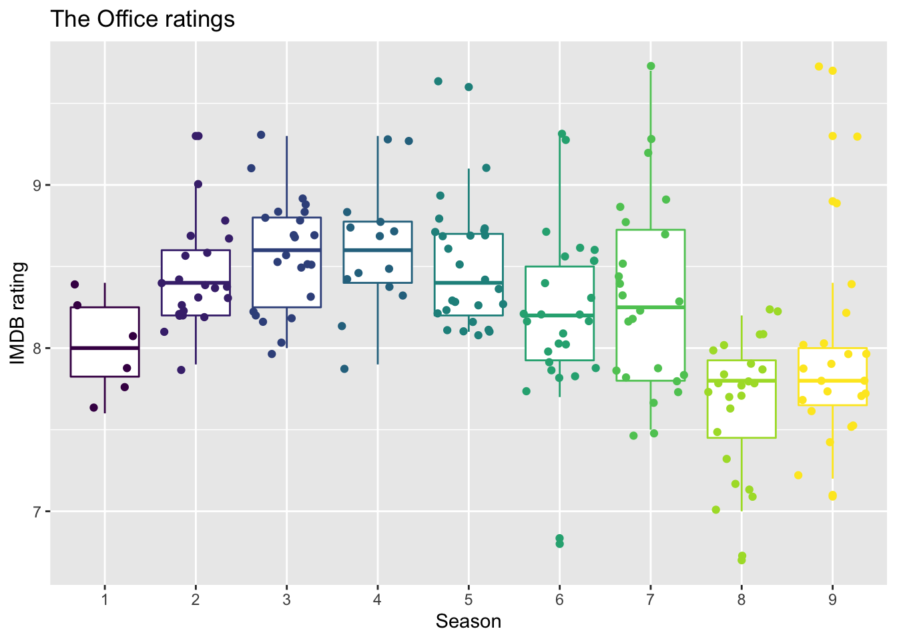

library(tidyverse)
library(tidymodels)
library(viridis)
library(knitr)AE 08: Feature Engineering- Model workflow
The Office
Important
Go to the course GitHub organization and locate your ae-08- to get started.
The AE is due on GitHub by Saturday, October 08 at 11:59pm.
Packages
Load data
office_ratings <- read_csv("data/office_ratings.csv")Exploratory data analysis
Below are two of the exploratory data analysis plots from lecture.
ggplot(office_ratings, aes(x = imdb_rating)) +
geom_histogram(binwidth = 0.25) +
labs(
title = "The Office ratings",
x = "IMDB rating"
)
office_ratings |>
mutate(season = as_factor(season)) |>
ggplot(aes(x = season, y = imdb_rating, color = season)) +
geom_boxplot() +
geom_jitter() +
guides(color = "none") +
labs(
title = "The Office ratings",
x = "Season",
y = "IMDB rating"
) +
scale_color_viridis_d()
Test/train split
set.seed(123)
office_split <- initial_split(office_ratings) # prop = 3/4 by default
office_train <- training(office_split)
office_test <- testing(office_split)Build a recipe
office_rec <- recipe(imdb_rating ~ ., data = office_train) |>
# make title's role ID
update_role(title, new_role = "ID") |>
# extract day of week and month of air_date
step_date(air_date, features = c("dow", "month")) |>
# identify holidays and add indicators
step_holiday(
air_date,
holidays = c("USThanksgivingDay", "USChristmasDay", "USNewYearsDay", "USIndependenceDay"),
keep_original_cols = FALSE
) |>
# turn season into factor
step_num2factor(season, levels = as.character(1:9)) |>
# make dummy variables
step_dummy(all_nominal_predictors()) |>
# remove zero variance predictors
step_zv(all_predictors())office_recRecipe
Inputs:
role #variables
ID 1
outcome 1
predictor 4
Operations:
Date features from air_date
Holiday features from air_date
Factor variables from season
Dummy variables from all_nominal_predictors()
Zero variance filter on all_predictors()Workflows and model fitting
Specify model
office_spec <- linear_reg() |>
set_engine("lm")
office_specLinear Regression Model Specification (regression)
Computational engine: lm Build workflow
office_wflow <- workflow() |>
add_model(office_spec) |>
add_recipe(office_rec)office_wflow══ Workflow ════════════════════════════════════════════════════════════════════
Preprocessor: Recipe
Model: linear_reg()
── Preprocessor ────────────────────────────────────────────────────────────────
5 Recipe Steps
• step_date()
• step_holiday()
• step_num2factor()
• step_dummy()
• step_zv()
── Model ───────────────────────────────────────────────────────────────────────
Linear Regression Model Specification (regression)
Computational engine: lm Fit model to training data
office_fit <- office_wflow |>
fit(data = office_train)
tidy(office_fit) |>
kable(digits = 3)| term | estimate | std.error | statistic | p.value |
|---|---|---|---|---|
| (Intercept) | 6.396 | 0.510 | 12.532 | 0.000 |
| episode | -0.004 | 0.017 | -0.230 | 0.818 |
| total_votes | 0.000 | 0.000 | 9.074 | 0.000 |
| season_X2 | 0.811 | 0.327 | 2.482 | 0.014 |
| season_X3 | 1.042 | 0.343 | 3.040 | 0.003 |
| season_X4 | 1.090 | 0.295 | 3.695 | 0.000 |
| season_X5 | 1.082 | 0.348 | 3.109 | 0.002 |
| season_X6 | 1.004 | 0.367 | 2.735 | 0.007 |
| season_X7 | 1.018 | 0.352 | 2.894 | 0.005 |
| season_X8 | 0.497 | 0.348 | 1.430 | 0.155 |
| season_X9 | 0.621 | 0.345 | 1.802 | 0.074 |
| air_date_dow_Tue | 0.382 | 0.422 | 0.904 | 0.368 |
| air_date_dow_Thu | 0.284 | 0.389 | 0.731 | 0.466 |
| air_date_month_Feb | -0.060 | 0.132 | -0.452 | 0.652 |
| air_date_month_Mar | -0.075 | 0.156 | -0.481 | 0.631 |
| air_date_month_Apr | 0.095 | 0.177 | 0.539 | 0.591 |
| air_date_month_May | 0.156 | 0.213 | 0.734 | 0.464 |
| air_date_month_Sep | -0.078 | 0.223 | -0.348 | 0.728 |
| air_date_month_Oct | -0.176 | 0.174 | -1.014 | 0.313 |
| air_date_month_Nov | -0.156 | 0.149 | -1.046 | 0.298 |
| air_date_month_Dec | 0.170 | 0.149 | 1.143 | 0.255 |
Evaluate model on training data
Make predictions
Important
Fill in the code and make #| eval: true before rendering the document.
office_train_pred <- predict(office_fit, ______) |>
bind_cols(_____)Calculate \(R^2\)
Important
Fill in the code and make #| eval: true before rendering the document.
rsq(office_train_pred, truth = _____, estimate = _____)- What is preferred - high or low values of \(R^2\)?
Calculate RMSE
Important
Fill in the code and make #| eval: true before rendering the document.
rmse(______, ________, ________)What is preferred - high or low values of RMSE?
Is this RMSE considered high or low? Hint: Consider the range of the response variable to answer this question.
office_train |> summarise(min = min(imdb_rating), max = max(imdb_rating))# A tibble: 1 × 2 min max <dbl> <dbl> 1 6.7 9.7
Evaluate model on testing data
Answer the following before evaluating the model performance on testing data:
Do you expect \(R^2\) on the testing data to be higher or lower than the \(R^2\) calculated using training data? Why?
Do you expect RMSE on the testing data to be higher or lower than the \(R^2\) calculated using training data? Why?
Make predictions
# fill in code to make predictions from testing dataCalculate \(R^2\)
# fill in code to calculate $R^2$ for testing dataCalculate RMSE
# fill in code to calculate RMSE for testing dataCompare training and testing data results
Compare the \(R^2\) for the training and testing data. Is this what you expected?
Compare the RMSE for the training and testing data. Is this what you expected?